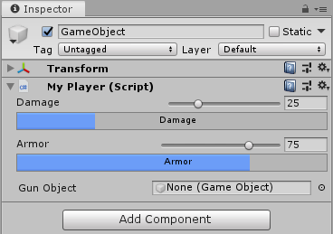

Description 描述
Derive from this base class to create a custom inspector or editor for your custom object.
using UnityEngine;
using System.Collections;
// This is not an editor script.
public class MyPlayer : MonoBehaviour
{
public int armor = 75;
public int damage = 25;
public GameObject gun;
void Update()
{
// Update logic here...
}
}
For example, use a custom editor to change the appearance of the script in the Inspector.
You can attach the Editor to a custom component by using the CustomEditor attribute.
There are multiple ways to design custom Editors.
If you want the Editor to support multi-object editing, you can use the CanEditMultipleObjects attribute.
Instead of modifying script variables directly, it's advantageous to use the SerializedObject and SerializedProperty
system to edit them, since this automatically handles multi-object editing, undo, and Prefab overrides. If this approach is used a user can select multiple assets in the hierarchy window and change the values for all of them at once.
You can either use UIElements to build your custom UI or you can use IMGUI. To create a custom inspector using UIElements, you have to override the Editor.CreateInspectorGUI on the Editor class. To create a custom inspector using IMGUI, you have to override the Editor.OnInspectorGUI on the Editor class. If you use UIElements and have Editor.CreateInspectorGUI overwritten, any existing IMGUI implementation using Editor.OnInspectorGUI on the same Editor will be ignored.
Here's an example of a custom inspector:

Custom editor in the Inspector.
The following example defines the layout of a custom inspector in uxml. The definition loads as a resource and the VisualTreeAsset.CloneTree method puts the hierarchy in a VisualElement object.
The InspectorWindow will instantiate an InspectorElement containing the custom inspector. The InspectorElement will call Bind on the custom inspector binding it to the MyPlayer object.
UIElements automatically updates the UI when data changes and vice-versa. To bind data and automatically update data and UI, set values for the "binding-path" attributes.
Styling of the inspector is done in uss.
.slider-row {
flex-direction: row;
justify-content: space-between;
margin-top: 4px;
}
.input-container {
flex-direction: row;
flex-grow: .6;
margin-right: 4px;
}
.player-property {
margin-bottom: 4px;
}
.player-property-label {
flex:1;
margin-left: 16;
}
.player-slider {
flex:3;
margin-right: 4px;
}
.player-property-progress-bar {
margin-left: 16px;
margin-right: 4px;
}
.player-int-field {
min-width: 48px;
}
.gun-field {
justify-content: space-between;
margin-left: 16px;
margin-right: 4px;
margin-top: 6px;
flex-grow: .6;
}
Here's an example of a custom inspector using IMGUI and multi-selection:
using UnityEditor;
using UnityEngine;
using System.Collections;
// Custom Editor using SerializedProperties.
// Automatic handling of multi-object editing, undo, and Prefab overrides.
[CustomEditor(typeof(MyPlayer))]
[CanEditMultipleObjects]
public class MyPlayerEditor : Editor
{
SerializedProperty damageProp;
SerializedProperty armorProp;
SerializedProperty gunProp;
void OnEnable()
{
// Setup the SerializedProperties.
damageProp = serializedObject.FindProperty ("damage");
armorProp = serializedObject.FindProperty ("armor");
gunProp = serializedObject.FindProperty ("gun");
}
public override void OnInspectorGUI()
{
// Update the serializedProperty - always do this in the beginning of OnInspectorGUI.
serializedObject.Update ();
// Show the custom GUI controls.
EditorGUILayout.IntSlider (damageProp, 0, 100, new GUIContent ("Damage"));
// Only show the damage progress bar if all the objects have the same damage value:
if (!damageProp.hasMultipleDifferentValues)
ProgressBar (damageProp.intValue / 100.0f, "Damage");
EditorGUILayout.IntSlider (armorProp, 0, 100, new GUIContent ("Armor"));
// Only show the armor progress bar if all the objects have the same armor value:
if (!armorProp.hasMultipleDifferentValues)
ProgressBar (armorProp.intValue / 100.0f, "Armor");
EditorGUILayout.PropertyField (gunProp, new GUIContent ("Gun Object"));
// Apply changes to the serializedProperty - always do this in the end of OnInspectorGUI.
serializedObject.ApplyModifiedProperties ();
}
// Custom GUILayout progress bar.
void ProgressBar (float value, string label)
{
// Get a rect for the progress bar using the same margins as a textfield:
Rect rect = GUILayoutUtility.GetRect (18, 18, "TextField");
EditorGUI.ProgressBar (rect, value, label);
EditorGUILayout.Space ();
}
}
If automatic handling of multi-object editing, undo,
and Prefab overrides is not needed, the script variables can be
modified directly by the editor without using the SerializedObject
and SerializedProperty system, as in the IMGUI example below.
using UnityEditor;
using UnityEngine;
using System.Collections;
// Example script with properties.
public class MyPlayerAlternative : MonoBehaviour
{
public int damage;
public int armor;
public GameObject gun;
// ...other code...
}
// Custom Editor the "old" way by modifying the script variables directly.
// No handling of multi-object editing, undo, and Prefab overrides!
[CustomEditor (typeof(MyPlayerAlternative))]
public class MyPlayerEditorAlternative : Editor
{
public override void OnInspectorGUI()
{
MyPlayerAlternative mp = (MyPlayerAlternative)target;
mp.damage = EditorGUILayout.IntSlider ("Damage", mp.damage, 0, 100);
ProgressBar (mp.damage / 100.0f, "Damage");
mp.armor = EditorGUILayout.IntSlider ("Armor", mp.armor, 0, 100);
ProgressBar (mp.armor / 100.0f, "Armor");
bool allowSceneObjects = !EditorUtility.IsPersistent (target);
mp.gun = (GameObject)EditorGUILayout.ObjectField ("Gun Object", mp.gun, typeof(GameObject), allowSceneObjects);
}
// Custom GUILayout progress bar.
void ProgressBar (float value, string label)
{
// Get a rect for the progress bar using the same margins as a textfield:
Rect rect = GUILayoutUtility.GetRect (18, 18, "TextField");
EditorGUI.ProgressBar (rect, value, label);
EditorGUILayout.Space ();
}
}
Properties 属性
| serializedObject | | A SerializedObject representing the object or objects being inspected. |
| target | | The object being inspected. |
| targets | | An array of all the object being inspected. |
Public Methods 公共方法
| CreateInspectorGUI | | Implement this method to make a custom UIElements inspector. |
| DrawDefaultInspector | | Draws the built-in inspector. |
| DrawHeader | | Call this function to draw the header of the editor. |
| DrawPreview | | The first entry point for Preview Drawing. |
| GetInfoString | | Implement this method to show asset information on top of the asset preview. |
| GetPreviewTitle | | Override this method if you want to change the label of the Preview area. |
| HasPreviewGUI | | Override this method in subclasses if you implement OnPreviewGUI. |
| OnInspectorGUI | | Implement this function to make a custom inspector. |
| OnInteractivePreviewGUI | | Implement to create your own interactive custom preview. Interactive custom previews are used in the preview area of the inspector and the object selector. |
| OnPreviewGUI | | Implement to create your own custom preview for the preview area of the inspector, the headers of the primary editor, and the object selector. |
| OnPreviewSettings | | Override this method if you want to show custom controls in the preview header. |
| RenderStaticPreview | | Override this method if you want to render a static preview. |
| Repaint | | Redraw any inspectors that shows this editor. |
| RequiresConstantRepaint | | Checks if this editor requires constant repaints in its current state. |
| UseDefaultMargins | | Override this method in subclasses to return false if you don't want default margins. |
Static Methods 静态方法
| CreateCachedEditor | | On return previousEditor is an editor for targetObject or targetObjects. The function either returns if the editor is already tracking the objects, or destroys the previous editor and creates a new one. |
| CreateCachedEditorWithContext | | Creates a cached editor using a context object. |
| CreateEditor | | Make a custom editor for targetObject or targetObjects. |
| CreateEditorWithContext | | Make a custom editor for targetObject or targetObjects with a context object. |
| DrawFoldoutInspector | | Draws the inspector GUI with a foldout header for target. |
Messages 消息
| OnSceneGUI | | Enables the Editor to handle an event in the Scene view. |
Events
| finishedDefaultHeaderGUI | | An event raised while drawing the header of the Inspector window, after the default header items have been drawn. |
Inherited Members 继承成员
Properties 属性
| hideFlags | | Should the object be hidden, saved with the Scene or modifiable by the user? |
| name | | The name of the object. |
Static Methods 静态方法
| Destroy | | Removes a GameObject, component or asset. |
| DestroyImmediate | | Destroys the object obj immediately. You are strongly recommended to use Destroy instead. |
| DontDestroyOnLoad | | Do not destroy the target Object when loading a new Scene. |
| FindObjectOfType | | Returns the first active loaded object of Type type. |
| FindObjectsOfType | | Returns a list of all active loaded objects of Type type. |
| Instantiate | | Clones the object original and returns the clone. |
| CreateInstance | | Creates an instance of a scriptable object. |
Operators 运算符
| bool | | Does the object exist? |
| operator != | | Compares if two objects refer to a different object. |
| operator == | | Compares two object references to see if they refer to the same object. |
Messages 消息
| Awake | | This function is called when the ScriptableObject script is started. |
| OnDestroy | | This function is called when the scriptable object will be destroyed. |
| OnDisable | | This function is called when the scriptable object goes out of scope. |
| OnEnable | | This function is called when the object is loaded. |